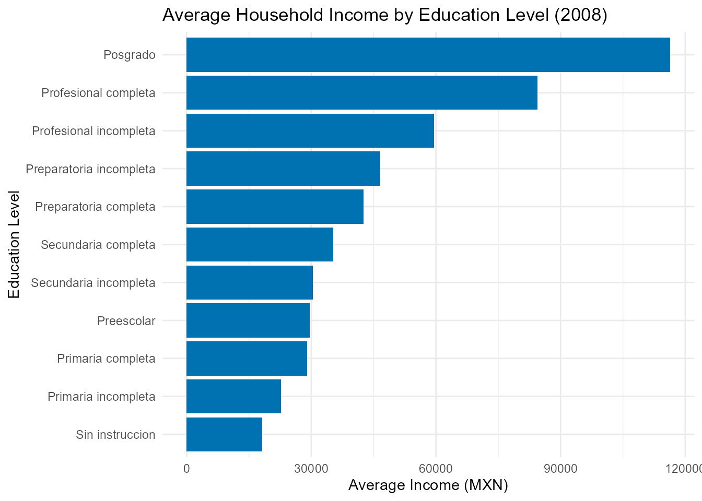

MexicoDataAPI: Access Mexican Data via APIs and Curated Datasets
Source:vignettes/MexicoDataAPI_vignette.Rmd
MexicoDataAPI_vignette.Rmd
library(MexicoDataAPI)
library(ggplot2)
library(dplyr)
#>
#> Attaching package: 'dplyr'
#> The following objects are masked from 'package:stats':
#>
#> filter, lag
#> The following objects are masked from 'package:base':
#>
#> intersect, setdiff, setequal, unionIntroduction
The MexicoDataAPI package provides a unified interface
to access open data from the World Bank API,
REST Countries API, and Nager.Date
API, with a focus on Mexico. It allows users to retrieve
up-to-date information on topics such as economic indicators, population
figures, literacy rates, unemployment levels, basic geopolitical
information, and official public holidays.
In addition to API-access functions, the package includes a set of curated datasets related to Mexico. These cover areas such as air quality monitoring, state-level income surveys, postal abbreviations, election results, and regional forest classification.
MexicoDataAPI is intended to support users working with
data related to Mexico by integrating international API sources with
selected datasets from national and academic origins, in a single R
package.
Functions for MexicoDataAPI
The MexicoDataAPI package provides several core
functions to access real-time and structured information about Mexico
from public APIs such as the World
Bank API, REST Countries,
and Nager.Date API.
Below is a list of the main functions included in the package:
get_country_info_mx(): Get Key Country Information about Mexico from the REST Countries APIget_mexico_cpi(): Get Mexico’s Consumer Price Index (2010 = 100) from World Bankget_mexico_gdp(): Get Mexico’s GDP (Current US$) from World Bankget_mexico_holidays(): Get official public holidays in Mexico for a given year, e.g.,get_mexico_holidays(2025).get_mexico_life_expectancy(): Get Mexico’s Life Expectancy from World Bankget_mexico_literacy_rate(): Get Mexico’s Literacy Rate (Age 15+) from World Bankget_mexico_population(): Get Mexico’s Population (Total) from World Bankget_mexico_unemployment(): Get Mexico’s Unemployment Rate (%) from World Bankview_datasets_MexicoDataAPI(): Lists all curated datasets included in theMexicoDataAPIpackage
These functions allow users to access high-quality and structured
information on Mexico, which can be combined with tools
like dplyr, tidyr, and ggplot2 to
support a wide range of data analysis and visualization tasks. In the
following sections, you’ll find examples on how to work with
MexicoDataAPI in practical scenarios.
Mexico’s GDP (Current US$) from World Bank 2022 - 2017
mexico_gdp <- head(get_mexico_gdp())
print(mexico_gdp)
#> # A tibble: 6 × 5
#> indicator country year value value_label
#> <chr> <chr> <int> <dbl> <chr>
#> 1 GDP (current US$) Mexico 2022 1.47e12 1,466,464,899,304
#> 2 GDP (current US$) Mexico 2021 1.32e12 1,316,569,466,735
#> 3 GDP (current US$) Mexico 2020 1.12e12 1,121,064,767,402
#> 4 GDP (current US$) Mexico 2019 1.30e12 1,304,106,203,902
#> 5 GDP (current US$) Mexico 2018 1.26e12 1,256,300,182,776
#> 6 GDP (current US$) Mexico 2017 1.19e12 1,190,721,475,906Mexico’s Life Expectancy from World Bank 2022 - 2017
life_expectancy <- head(get_mexico_life_expectancy())
print(life_expectancy)
#> # A tibble: 6 × 4
#> indicator country year value
#> <chr> <chr> <int> <dbl>
#> 1 Life expectancy at birth, total (years) Mexico 2022 74.0
#> 2 Life expectancy at birth, total (years) Mexico 2021 69.8
#> 3 Life expectancy at birth, total (years) Mexico 2020 70.4
#> 4 Life expectancy at birth, total (years) Mexico 2019 74.5
#> 5 Life expectancy at birth, total (years) Mexico 2018 74.3
#> 6 Life expectancy at birth, total (years) Mexico 2017 74.3Mexico’s Population (Total) from World Bank 2022 - 2017
mexico_population <- head(get_mexico_population())
print(mexico_population)
#> # A tibble: 6 × 5
#> indicator country year value value_label
#> <chr> <chr> <int> <int> <chr>
#> 1 Population, total Mexico 2022 128613117 128,613,117
#> 2 Population, total Mexico 2021 127648148 127,648,148
#> 3 Population, total Mexico 2020 126799054 126,799,054
#> 4 Population, total Mexico 2019 125762982 125,762,982
#> 5 Population, total Mexico 2018 124573711 124,573,711
#> 6 Population, total Mexico 2017 123400057 123,400,057Average Household Income by Education Level (2008)
# Summary of average income by education level
avg_income_by_education <- mex_income_2008_tbl_df %>%
group_by(education) %>%
summarise(avg_income = mean(income, na.rm = TRUE)) %>%
arrange(desc(avg_income))
# Plot
ggplot(avg_income_by_education, aes(x = reorder(education, avg_income), y = avg_income)) +
geom_col(fill = "#0072B2") +
coord_flip() +
labs(
title = "Average Household Income by Education Level (2008)",
x = "Education Level",
y = "Average Income (MXN)"
) +
theme_minimal()
Dataset Suffixes
Each dataset in MexicoDataAPI is labeled with a
suffix to indicate its structure and type:
_df: A standard data frame._tbl_df: A tibble data frame object._chr: A character object.
Datasets Included in MexicoDataAPI
In addition to API access functions, MexicoDataAPI
provides several preloaded datasets related to Mexico’s environment,
demographics, and public data. Here are some featured examples:
mexico_elections_df: Data frame containing a subset of the 2012 Mexico Elections Panel Study.mex_income_2016_tbl_df: Tibble containing household-level income data and associated demographic characteristics from the 2016 ENIGH (Household Income and Expenditure Survey).mexico_abb_chr: Character vector containing the official two- or three-letter postal abbreviations for the 32 federal entities of Mexico.
Conclusion
The MexicoDataAPI package provides a comprehensive
interface to access open data about Mexico through
RESTful APIs and curated datasets. It includes functions to retrieve
real-time information from the World Bank API,
REST Countries API, and Nager.Date
API, covering topics such as population, GDP, CPI, life
expectancy, literacy, unemployment, general country-level indicators,
and official public holidays. In addition, the package offers curated
datasets related to air quality monitoring stations, pollution zones,
state-level income surveys for 2008 and 2016, postal abbreviations,
election studies, and ecological data from the Chiapas dry forests.
Together, these resources support research, teaching, and analysis
focused on Mexico’s economic, environmental, and sociopolitical
landscape.